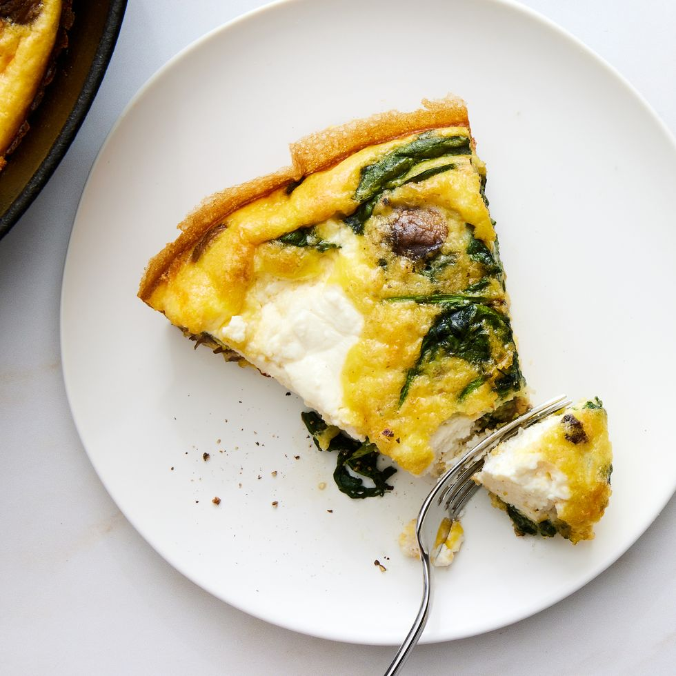

Frittata
Serving ideas.
A frittata is perfect for any meal, anytime of day. If you're serving this for breakfast, you can't go wrong adding some pan-fried potatoes or crispy hash browns to your plate. Making this for dinner? Pair your frittata with a simple arugula salad or our air fryer sweet potato hash for a filling, easy end to your day.
Ingredients
- 8large eggs
- 3/4 c.shredded mozzarella
- 1/3 c.heavy cream
- Kosher salt
- Freshly ground black pepper
- Pinch of red pepper flakes
- 2 tbsp.extra-virgin olive oil
- 1shallot, finely chopped
- 3cloves garlic, finely chopped
- 8 oz.baby bella mushrooms, sliced
- 3 c.baby spinach
- 1/2 c.ricotta
Directions
-
Step
Preheat oven to 375°. In a medium bowl, whisk eggs, mozzarella, and cream; season with salt, black pepper, and red pepper.
-
Step
In a large ovenproof skillet over medium heat, heat oil. Add shallot and garlic and cook, stirring occasionally, until shallot is translucent, about 5 minutes. Add mushrooms and cook, stirring occasionally, until softened, about 5 minutes more. Add spinach and cook, stirring frequently, until wilted, about 2 minutes; season with salt and black pepper.
-
Step
Pour egg mixture into pan over vegetables. Dollop with ricotta.
-
Step
Bake frittata until eggs are just set and edges are golden brown, about 12 minutes.